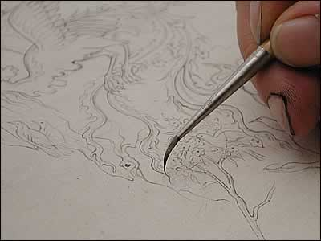

Drawing
Either free-hand or using a traced design, an artist would then complete the drawing for their painting. Instead of pencils, very fine brushes made of squirrel hair were used. This initial sketch was known as the tarh.
| ||
| ...previous | next... | |